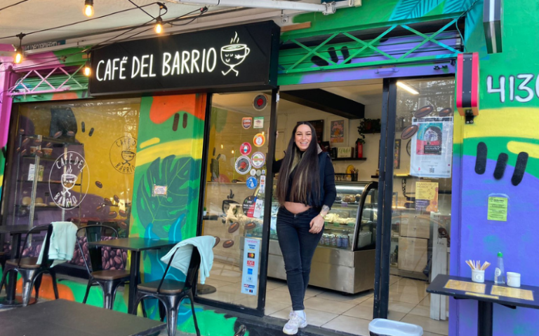

Cientos de pescadores bloquearon accesos en Valparaíso exigiendo subsidios y mejoras laborales tras meses de baja actividad.
Incendio forestal arrasa 50 hectáreas
Un voraz incendio en la zona rural de Casablanca fue contenido tras arduo trabajo de bomberos y apoyo aéreo.
Choque múltiple en Coquimbo
Cuatro buses interurbanos colisionaron en la Ruta 5 Norte, dejando al menos 15 heridos y congestión por horas.
Tabilo avanza a semifinales del ATP de Santiago
En una jornada vibrante del ATP de Santiago, el tenista chileno Alejandro Tabilo logró una contundente victoria frente al argentino Sebastián Báez, accediendo por primera vez en su carrera a las semifinales del torneo. Con un marcador de 6-3 y 6-1, Tabilo demostró una madurez deportiva destacable y un nivel técnico que lo perfila como uno de los principales referentes del tenis nacional.
Desde el primer game, el chileno impuso su ritmo con un potente servicio y una derecha profunda que dificultó el juego del argentino. Báez, que venía con buen rendimiento en torneos anteriores, se vio sorprendido por la agresividad controlada del local, quien además contó con el ferviente apoyo del público que colmó las graderías del Court Central.
Tabilo manejó con inteligencia cada momento del partido, utilizando cambios de ritmo, subidas a la red oportunas y una defensa sólida desde el fondo de la cancha. En el segundo set, su dominio fue aún más evidente, logrando tres quiebres consecutivos y cerrando el encuentro con una volea ganadora que desató la ovación del público.
Tras el partido, el jugador expresó: “Es un sueño jugar así frente a mi gente. He trabajado muy duro estos últimos meses y ver los resultados aquí, en casa, es algo que me llena de orgullo y emoción”. Su entrenador también destacó el progreso mental del jugador, que ha logrado mantener la concentración incluso en momentos de presión.
Con esta victoria, Tabilo se enfrentará en semifinales a su compatriota Cristian Garín, en un duelo que promete ser uno de los más emocionantes del torneo. Este enfrentamiento no solo definirá al finalista chileno, sino que también marcará un punto de inflexión para ambos en su camino hacia el circuito ATP de mayor nivel. Las entradas para este encuentro ya están agotadas, y la expectación entre los fanáticos del tenis es máxima.
20 de abril de 2025
Garín elimina a top 20 mundial
Cristian Garín volvió a brillar en el ATP de Barcelona, esta vez superando al italiano Lorenzo Musetti, actual número 19 del mundo, en un duelo que evidenció su mejor forma física y mental. Garín se impuso con parciales de 7-5 y 6-4, mostrando una solidez táctica y emocional que había sido esquiva en torneos anteriores.
El chileno sorprendió con una estrategia basada en la agresividad desde el fondo de la cancha y una mejora notable en su primer servicio. Musetti, por su parte, intentó imponer su juego de variaciones y subidas, pero no logró mantener la consistencia frente a la precisión del chileno, que se mostró rápido de piernas y acertado en los puntos importantes.
Lo más destacado de Garín fue su enfoque. A diferencia de ocasiones pasadas donde perdía la concentración tras errores no forzados, esta vez supo recuperarse rápidamente y jugar con inteligencia táctica. Fue capaz de mantener la calma ante las devoluciones potentes de Musetti y logró convertir cinco de las seis oportunidades de quiebre que generó.
Al finalizar el encuentro, Garín declaró: “Estoy feliz con cómo estoy jugando, me he preparado mucho para esto. Volver a ganarle a jugadores del top 20 me da mucha confianza. Esto recién comienza”. Con esta victoria, suma puntos valiosos para el ranking ATP y se afianza como uno de los mejores tenistas sudamericanos del momento.
La prensa especializada no tardó en elogiarlo. “Garín ha vuelto”, tituló un diario español, mientras que los medios chilenos destacaron su garra, concentración y capacidad para revertir una temporada que había comenzado con altibajos. Se espera que su próximo enfrentamiento sea aún más desafiante, pero con este impulso, el camino de Garín parece más prometedor que nunca.
20 de abril de 2025
Jarry se retira por lesión en torneo europeo
Nicolás Jarry anunció su retiro anticipado del torneo ATP 500 de Barcelona debido a una lesión en el hombro derecho. La noticia causó preocupación en el entorno del tenis chileno, ya que el jugador venía mostrando un rendimiento ascendente en la gira europea sobre arcilla.
El tenista nacional presentó molestias durante su partido de segunda ronda. A pesar de intentar continuar, sus gestos de dolor se hicieron evidentes, lo que llevó a su equipo médico a realizar una evaluación inmediata. Según el diagnóstico preliminar, Jarry presenta una inflamación aguda en el tendón del hombro, que requiere reposo absoluto durante al menos una semana.
En sus declaraciones públicas, el jugador expresó su frustración: “Me siento triste porque estaba disfrutando mucho del tenis nuevamente. Pero escuché a mi cuerpo. No quiero arriesgar una lesión mayor”. Su decisión fue respaldada tanto por su entrenador como por el cuerpo técnico de la Federación de Tenis de Chile.
Los planes de Jarry ahora se enfocan en recuperarse a tiempo para los torneos de Madrid y Roma, donde espera volver en plena forma. Esta situación pone una pausa a su impulso competitivo, pero también abre una oportunidad para trabajar en su preparación física y prevenir futuras lesiones.
El retiro de Jarry también impacta al equipo chileno de Copa Davis, que deberá evaluar su alineación si el jugador no se recupera antes de la próxima convocatoria. A pesar del contratiempo, sus seguidores y compañeros de circuito han mostrado total respaldo, destacando su entrega y profesionalismo dentro y fuera de la cancha.
20 de abril de 2025
Startup crea app de reciclaje
La startup EcoSmart lanzó una innovadora app que recompensa a quienes reciclan. Más de 30 mil usuarios ya la utilizan.
Café aumenta ventas

Café Esquina duplicó sus ventas con pedidos por WhatsApp y entrega a domicilio en menos de 20 minutos.
Criptomonedas se estabilizan
La CMF estudia nuevas regulaciones mientras usuarios retoman confianza en Bitcoin, Ethereum y stablecoins.